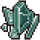

Broken glass
| Broken glass | |
|---|---|
 | |
General Information
| |
Type :
|
Glass Item |
Source(s)
| |
Buy from :
|
None |
Sell to :
|
None |
| Souls room | |
Technical Information
| |
Internal name:
|
broken_glass |

Broken glass is a byproduct of breaking down old broken bottles in the Souls room. Each bottle gives 3-5x Broken glass, making it to max out at 27x obtainable Broken glass.
Crafting
| Furnace | ||
|---|---|---|
| Item Produced | Materials Required | Cost |
| 1× Glass |
1× Broken glass |
0:30 - |
| Furnace II | ||
| Item Produced | Materials Required | Cost |
| 1× Glass |
1× Broken glass |
0:30 - |
| Furnace III (Not available for ver. 1.405) | ||
| Item Produced | Materials Required | Cost |
| 1× Glass |
1× Broken glass |
0:30 - |
| ||||||||